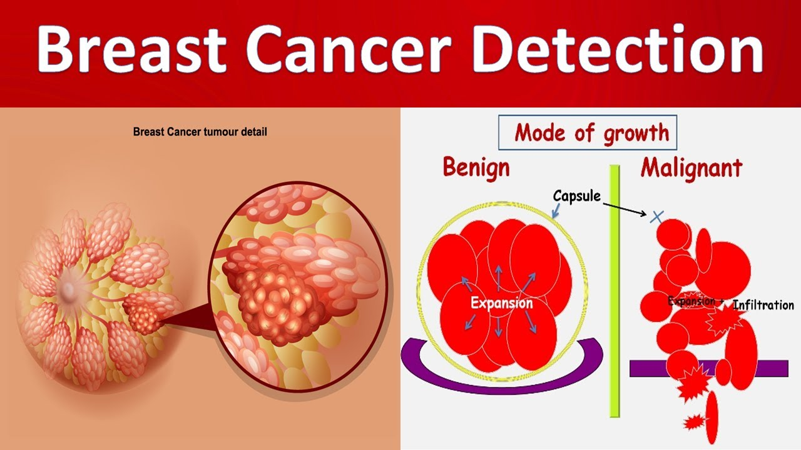

Breast Cancer Detection using Machine Learning
This project aims to develop a machine learning model to classify breast cells as malignant or benign.
View Project.jpeg)
Google Trends Data Analysis using Python
This project involves analyzing search trends using Python.
View Project.jpg)
Arduino Hand Gesture Controlled LED System
This project showcases a system where LED lights are controlled through hand gestures using Arduino.
View ProjectUdemy Courses Data Analysis using Python
Udemy is an online learning platform with 40 million users, 428 million course enrollments, and 157,000 courses...
View ProjectEarly prediction of Low birth weight case using machine learning
Low birth weight is the term used to refer to babies born with a weight less than 2500gm...
View Project